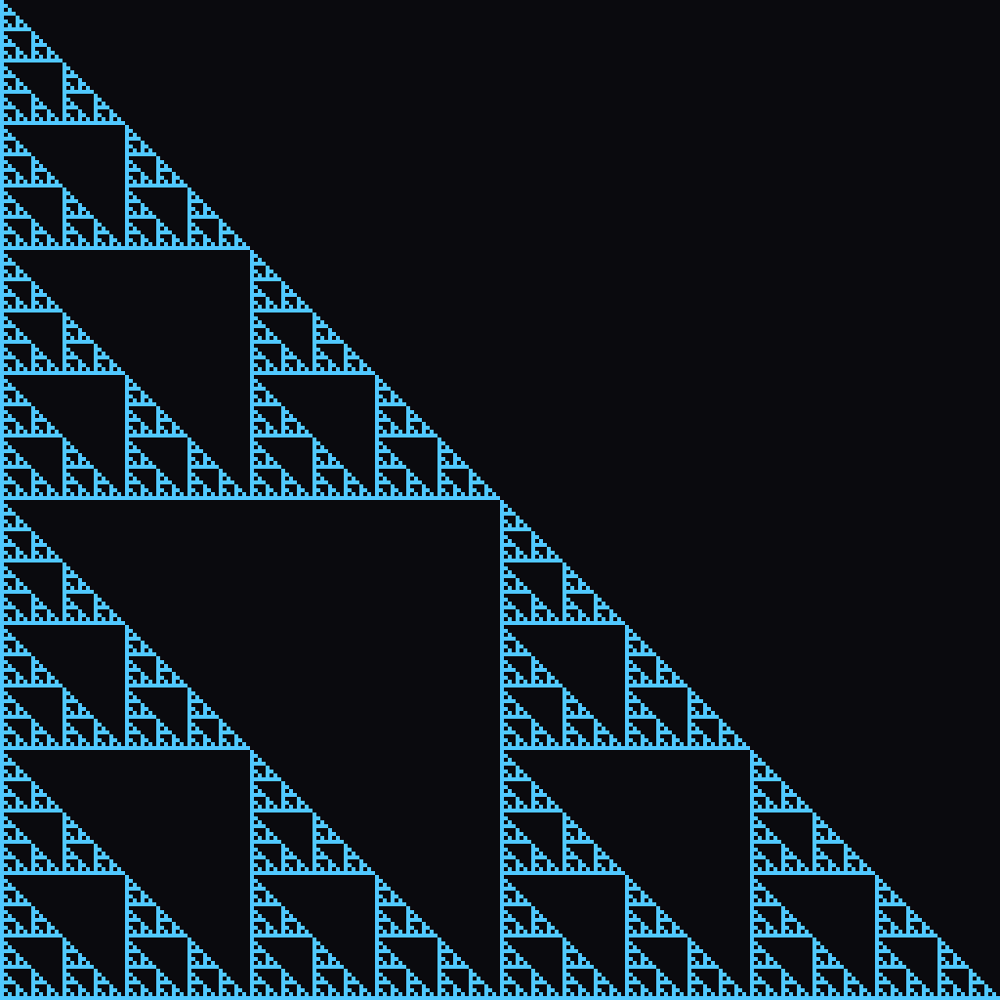
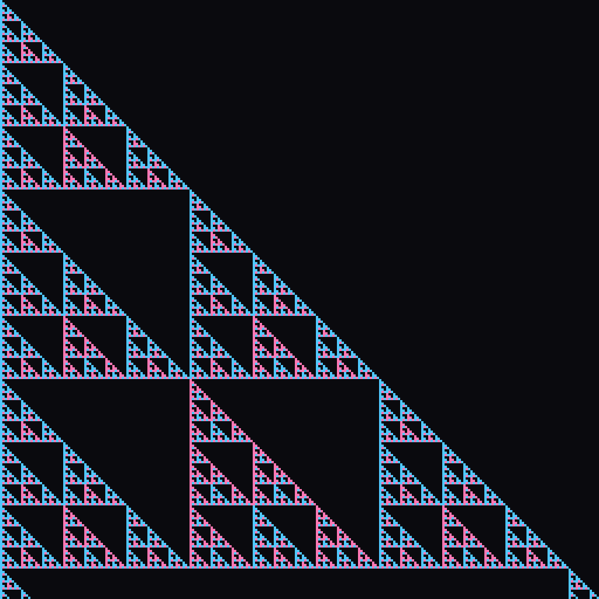
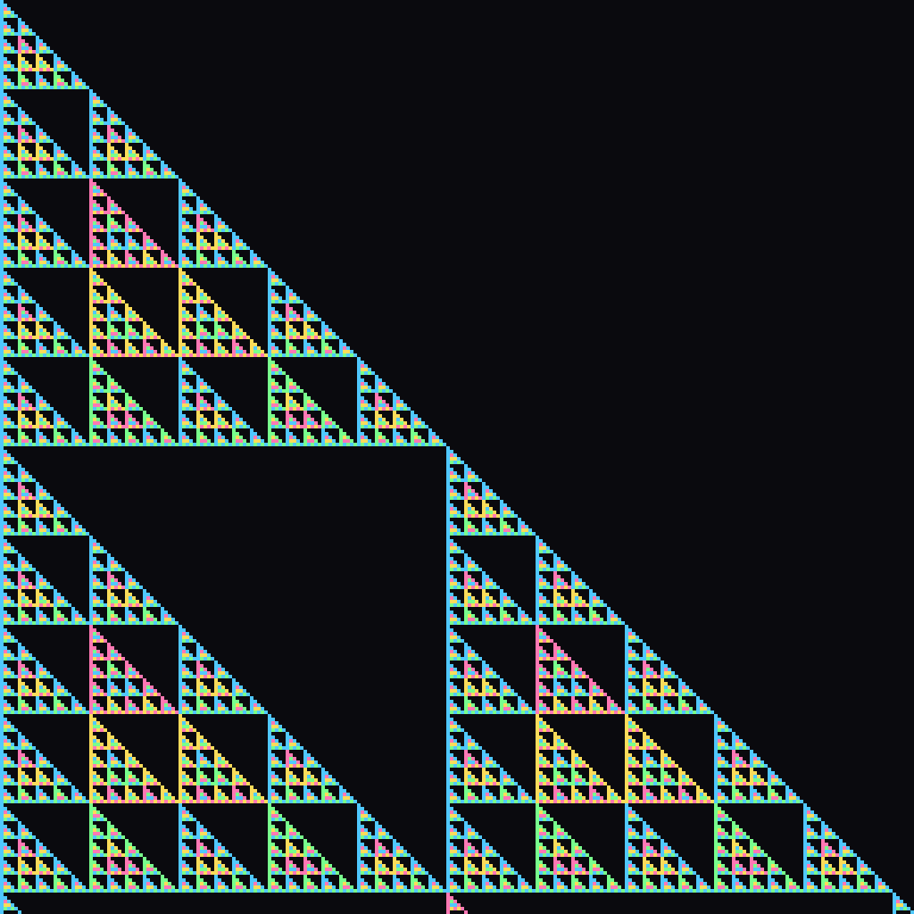

colour each cell of pascal's triangle by its value mod p, and the arithmetic quietly draws a fractal. mod 2 gives the sierpinski gasket; mod 3 and 5 are their own shapes. 256 rows, cell = residue.



why mod 2 is exactly sierpinski. by lucas' theorem, C(n,k) is odd iff every base-2 digit of k is ≤ the matching digit of n — i.e. k & n == k. the odd entries in row n are exactly the submasks of n. so the count of odd entries in row n is 2^popcount(n).
row 0 has 1 odd entry, row 1 has 2, row 3 has 4, row 7 has 8... and the positions themselves are the self-similar gasket. the fractal isn't drawn on top — it falls out of the arithmetic.
same lucas theorem, general p: C(n,k) mod p is the product, over base-p digits, of C(ni, ki) mod p. a digit where ki > ni makes it zero. everything else is a little product of small binomials.
made with python + pillow. 256 rows, residues coloured. ← home